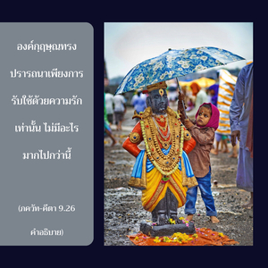

หากผู้ใดถวายใบไม้ ดอกไม้ ผลไม้ หรือน้ำแด่ข้าด้วยความรักและอุทิศตนเสียสละ ข้าจะรับเอาไว้

สำหรับผู้มีปัญญาเป็นสิ่งสำคัญที่จะอยู่ในกฺฤษฺณจิตสำนึก ปฏิบัติการรับใช้ด้วยความรักทิพย์ต่อองค์กฺฤษฺณ เพื่อบรรลุถึงพระตำหนักอันถาวรด้วยความปลื้มปีติ และมีความสุขนิรันดร วิธีการเพื่อบรรลุถึงผลอันเลอเลิศเช่นนี้ง่ายมาก แม้แต่คนที่ยากจนที่สุดในบรรดาคนยากจนก็พยายามปฏิบัติได้โดยไม่คำนึงถึงคุณสมบัติอื่นใดทั้งสิ้น คุณสมบัติเพียงอย่างเดียวที่จำเป็นในงานนี้คือมาเป็นสาวกผู้บริสุทธิ์ขององค์ภควานฺ ไม่สำคัญว่าเขาจะเป็นใครหรืออยู่ที่ไหน วิธีการนั้นง่ายมากแม้แต่ใบไม้ใบเดียว น้ำนิดหน่อย หรือผลไม้ก็สามารถถวายให้พระองค์ด้วยความรักอย่างจริงใจได้ และพระองค์ทรงมีความยินดีรับไว้ ดังนั้น ไม่มีผู้ใดถูกขวางกั้นจากกฺฤษฺณจิตสำนึก เพราะว่าเป็นสิ่งที่ง่ายมาก และเป็นสากล ใครจะเป็นคนโง่ไม่ต้องการมีกฺฤษฺณจิตสำนึกด้วยวิธีที่ง่ายเช่นนี้ และบรรลุถึงชีวิตที่สมบูรณ์สูงสุดแห่งความเป็นอมตะ ปลื้มปีติสุขและความรู้ องค์กฺฤษฺณทรงปรารถนาเพียงการรับใช้ด้วยความรักเท่านั้น ไม่มีอะไรมากไปกว่านี้ องค์กฺฤษฺณทรงรับเอาแม้แต่ดอกไม้เล็กๆ เพียงดอกเดียวจากสาวกผู้บริสุทธิ์ พระองค์ทรงไม่ปรารถนาเครื่องถวายใดๆ จากผู้ที่ไม่ใช่สาวก และทรงไม่มีความจำเป็นที่ต้องการสิ่งใดจากผู้ใดเพราะทรงเป็นผู้มีความเพียงพออยู่ในตัว ถึงกระนั้น พระองค์ทรงรับเครื่องถวายจากสาวกเพื่อเป็นการแลกเปลี่ยนความรัก และความเอ็นดู การพัฒนากฺฤษฺณจิตสำนึกจึงเป็นความสมบูรณ์สูงสุดของชีวิต ได้กล่าวถึง ภกฺติ สองครั้งในโศลกนี้เพื่อแสดงให้เห็นถึงความสำคัญว่าภกฺติ หรือการอุทิศตนเสียสละรับใช้เป็นวิถีทางเดียวเท่านั้นที่จะเข้าถึงองค์กฺฤษฺณ ไม่ใช่วิธีอื่น เช่น กลายมาเป็น พฺราหฺมณ หรือ พราหมณ์ มาเป็นนักวิชาการผู้คงแก่เรียน มาเป็นเศรษฐี หรือเป็นนักปราชญ์ผู้ยิ่งใหญ่แล้วจะสามารถกระตุ้นให้องค์กฺฤษฺณทรงยอมรับเครื่องถวายได้ หากปราศจากหลักธรรมพื้นฐานของ ภกฺติ จะไม่มีสิ่งใดสามารถกระตุ้นองค์ภควานฺให้ตกลงยอมรับสิ่งใดจากผู้ใด ภกฺติ ไม่ใช่ก่อให้เกิดขึ้น วิธีการนี้เป็นอมตะนิรันดร และเป็นการปฏิบัติรับใช้โดยตรงต่อส่วนที่สมบูรณ์สูงสุด
ณ ที่นี้ องค์ศฺรีกฺฤษฺณทรงสถาปนาว่าพระองค์ทรงเป็นผู้มีความสุขเกษมสำราญแต่เพียงผู้เดียว ทรงเป็นปฐมองค์เจ้าและทรงเป็นจุดมุ่งหมายอันแท้จริงของการถวายบูชาทั้งหมด ทรงเปิดเผยว่าพระองค์ทรงปรารถนาให้บูชาด้วยอะไร หากผู้ใดปรารถนาปฏิบัติการอุทิศตนเสียสละรับใช้ต่อองค์ภควานฺ เพื่อให้ตนเองบริสุทธิ์ขึ้นและบรรลุถึงจุดมุ่งหมายแห่งชีวิต นั่นคือการรับใช้ด้วยความรักทิพย์ต่อพระองค์ เราควรรู้ว่าองค์ภควานฺทรงปรารถนาอะไรจากตัวเรา ผู้ที่รักองค์กฺฤษฺณจะให้ทุกสิ่งทุกอย่างที่พระองค์ทรงปรารถนา และจะหลีกเลี่ยงการถวายสิ่งที่พระองค์ไม่ทรงปรารถนาหรือไม่ได้กล่าวไว้ ฉะนั้น เนื้อสัตว์ ปลา และไข่ไม่ควรถวายให้องค์กฺฤษฺณ หากทรงปรารถนาสิ่งเหล่านี้เป็นเครื่องถวายจะทรงตรัสออกมา แต่พระองค์ตรัสอย่างชัดเจนว่า ใบไม้ ผลไม้ ดอกไม้ และน้ำถวายให้พระองค์ และตรัสถึงเครื่องถวายเหล่านี้ว่า “ข้าจะรับไว้” ดังนั้น เราควรเข้าใจว่าองค์กฺฤษฺณทรงไม่รับการถวายเนื้อสัตว์ ปลา และไข่ อาหารที่เหมาะสำหรับมนุษย์คือ ผักและผลไม้ต่างๆ เมล็ดข้าว นม และน้ำ องค์กฺฤษฺณทรงกำหนดว่าสิ่งอื่นใดก็แล้วแต่ที่เรารับประทานไม่สามารถถวายให้พระองค์ได้เนื่องจากทรงไม่รับ ดังนั้น หากเราถวายสิ่งที่ต้องห้าม ไม่ถือว่าเราปฏิบัติในระดับแห่งการอุทิศตนเสียสละด้วยความรัก
ในบทที่สามโศลกสิบสาม ศฺรีกฺฤษฺณทรงอธิบายว่าส่วนที่เหลือจากการบูชาเป็นสิ่งที่บริสุทธิ์ เหมาะสำหรับพวกที่แสวงหาความเจริญก้าวหน้าในชีวิตนำไปรับประทาน และจะได้รับการปลดเปลื้องจากเงื้อมมือแห่งพันธนาการทางวัตถุ พวกที่ไม่ถวายอาหารนั้นพระองค์ตรัสในโศลกเดียวกันว่ารับประทานแต่ความบาปไปเท่านั้น อีกนัยหนึ่ง ทุกๆ คำที่รับประทานเข้าไปจะทำให้ถลำลึกลงไปในความสลับซับซ้อนของธรรมชาติวัตถุเท่านั้น แต่การตระเตรียมอาหารอย่างดีที่ทำมาจากผักต่างๆ แบบง่ายๆ และถวายต่อหน้ารูป หรือพระปฏิมาขององค์ศฺรีกฺฤษฺณ ก้มลงกราบ และกล่าวบทมนต์ถวายด้วยความถ่อมตน เพื่อให้พระองค์ทรงรับเครื่องถวายนี้ เพื่อที่จะให้เราเจริญก้าวหน้าอย่างมั่นคงในชีวิต เพื่อให้ร่างกายบริสุทธิ์ และเพื่อสร้างเนื้อเยื่ออันละเอียดอ่อนในสมอง ซึ่งจะทำให้เรามีความคิดที่โปร่งใส ยิ่งไปกว่านั้น เครื่องถวายควรปรุงด้วยกริยาท่าทีแห่งความรัก องค์กฺฤษฺณทรงไม่มีความจำเป็นกับอาหาร เพราะพระองค์ทรงเป็นเจ้าของทุกสิ่งทุกอย่างที่มีอยู่ทั้งหมด ถึงกระนั้น พระองค์จะทรงรับเครื่องถวายจากผู้ปรารถนาที่จะทำให้พระองค์ทรงพอพระทัยด้วยวิธีนั้น จุดสำคัญในการเตรียม การจัด และการถวายก็คือ ต้องทำไปด้วยใจรักต่อองค์กฺฤษฺณ
นักปราชญ์ผู้ไม่เชื่อในรูปลักษณ์ปรารถนายืนกรานว่า สัจธรรมสูงสุดไม่มีประสาทสัมผัส จะไม่สามารถเข้าใจโศลกนี้ของ ภควัท-คีตา ได้สำหรับพวกนี้แล้วนั้นโศลกนี้เป็นเพียงอุปมา หรือข้อพิสูจน์ถึงบุคลิกทางโลกขององค์กฺฤษฺณผู้ตรัส ภควัท-คีตา แต่อันที่จริงองค์ภควานฺ กฺฤษฺณทรงมีประสาทสัมผัส ได้กล่าวไว้ว่า ประสาทสัมผัสของพระองค์สับเปลี่ยนกันได้ อีกนัยหนึ่ง ประสาทสัมผัสหนึ่งสามารถปฏิบัติหน้าที่ของประสาทสัมผัสอื่นๆ ได้ นี่คือความหมายที่กล่าวไว้ว่า องค์กฺฤษฺณทรงเป็นผู้ที่สมบูรณ์ หากปราศจากประสาทสัมผัสจะพิจารณาว่าพระองค์ทรงมีความมั่งคั่งทั้งหมดที่สมบูรณ์ได้ยาก ในบทที่เจ็ดองค์กฺฤษฺณทรงอธิบายว่า พระองค์ทรงทำให้ธรรมชาติวัตถุตั้งครรภ์สิ่งมีชีวิตขึ้นมา และสิ่งนี้ทรงกระทำด้วยเพียงแต่ทรงชำเลืองมองไปที่ธรรมชาติวัตถุ จากตัวอย่างนี้องค์กฺฤษฺณทรงสดับฟังคำพูดของสาวกด้วยความรักในการถวายอาหาร เหมือนกับที่พระองค์ทรงรับประทาน และชิมรสจริงๆ โดยสมบูรณ์ ประเด็นนี้ควรได้รับการเน้นย้ำ เพราะเป็นสภาวะอันสมบูรณ์ขององค์กฺฤษฺณ การสดับฟังเหมือนกับการรับประทาน และการลิ้มรสของพระองค์ที่เป็นไปอย่างสมบูรณ์ สาวกผู้ยอมรับองค์กฺฤษฺณเท่านั้น ดังที่ทรงอธิบายถึงบุคลิกภาพของพระองค์เองโดยไม่มีการตีความ จะสามารถทำให้เข้าใจว่าสัจธรรมที่สมบูรณ์สูงสุดสามารถรับประทานอาหาร และมีความสุขกับอาหารเหล่านั้นได้